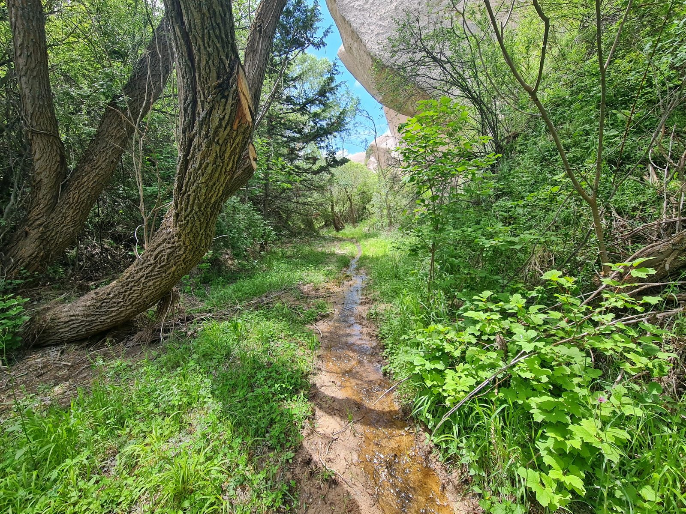

Vadi · güneyden kuzeye
Mamasun Vadisi
Bahçeli'nin güneyinde üç ana kolla başlayıp kuzeyde Gomeda Vadisi ile birleşen, kuş uçuşu yaklaşık 15 kilometrelik bir su aşındırması oluşumu olan Mamasun Vadisi adeta bir açık hava müzesidir. Vadi içinde bugüne dek tespit edilmiş sekiz kaya oyma kilisenin yanı sıra çok sayıda kaya mezarı, güvercinlik, şırahane, kaya oyma arılık, sivil mimari örneği, taş köprü ve çeşme ziyaretçileri bekler. Bu zengin kültürel mirasın yanında vadinin gizli doğa hazinelerinden biri de yöre halkının "Acı Su" olarak adlandırdığı doğal maden suyu kaynağıdır.